SZP ist ein Arbeitsverfahren und ermöglicht den Anwendern und Anwenderinnen den Zugang zum sowie die Positionierung am Arbeitsplatz und das Verlassen desselben. Änderungen der Arbeitsposition unter planmäßiger Belastung eines Seiles sind ebenfalls möglich. SZP schützt die Anwender und Anwenderinnen vor einem Absturz durch die Verwendung eines Sicherungssystems (siehe Abbildungen 6 und 9).
Zur Abgrenzung des Verfahrens wird hier der Einsatz von PSA gegen Absturz (PSAgA) dargestellt.
PSAgA ist genau wie SZP ein Teilbereich der persönlichen Absturzschutzsysteme nach DIN EN 363 (siehe Abbildung 5). Allerdings ist PSAgA eine individuelle Schutzausrüstung und unterliegt somit der PSA-Verordnung und nicht wie SZP der Betriebssicherheitsverordnung. Zur PSAgA gehören Rückhaltesysteme, Arbeitsplatzpositionierungssysteme und Auffangsysteme. PSAgA ist ein Sicherungssystem, welches bei der Fortbewegung unter Verwendung eines nicht planmäßig belasteten Verbindungsmittels eingesetzt wird (siehe Abbildungen 6 und 8).
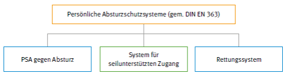
Abb. 5 Absturzschutzsysteme nach DIN EN 363
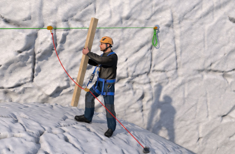
Abb. 6 Verwendung von PSAgA/Auffangsystem
SZP ist gekennzeichnet durch:
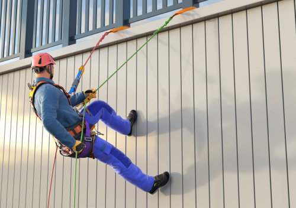
Abb. 7 Verwendung von SZP
Bei der Anwendung von SZP wird kein sicherer Stand durch den eigenen Körper erzeugt.
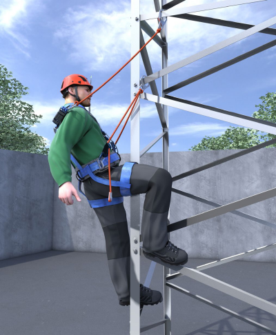
Abb. 8 Positionieren durch Verwendung von PSAgA/Absturzschutzsystem
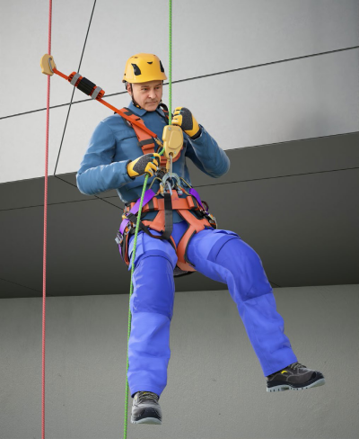
Abb. 9 Verwendung von SZP
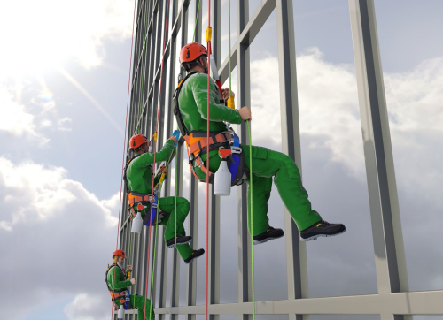
Abb. 10 SZP vertikale Hauptbewegungsrichtung
Die Anwendung von SZP wird nach drei Zugangsrichtungen unterteilt.
Vertikale Hauptbewegungsrichtung:
Die Höhenarbeiter und Höhenarbeiterinnen bewegen sich an einem Tragsystem vertikal nach unten oder oben um einen Arbeitsplatz zu erreichen und sich an diesem zu positionieren (siehe Abbildung 10).
Typische Anwendungen sind z. B. Arbeiten an einer Fassade oder senkrechten Wand.
Horizontale Hauptbewegungsrichtung(Traversieren):
Die Höhenarbeiter und Höhenarbeiterinnen bewegen sich horizontal unterhalb einer tragenden Struktur. Dies geschieht prinzipiell durch ein kontinuierliches Versetzen der Anschlageinrichtungen bzw. durch Versetzen der Systeme von Anschlageinrichtung zu Anschlageinrichtung. Durch den ständigen Wechsel werden die Systeme sowohl als Trag- wie auch als Sicherungssystem eingesetzt.
Typische Anwendungen sind z. B. die Fortbewegungen unter einer Dachkonstruktion oder unter Brücken. Zur Aufrechterhaltung der Redundanz im Augenblick des Wechsels einer Anschlageinrichtung ist ein zusätzliches, drittes System erforderlich (siehe Abbildungen 11a, 11b und 11c).
Diagonale Hauptbewegungsrichtung:
Für die diagonale Fortbewegung wird zunächst eine Seilstrecke installiert. Dazu werden mindestens zwei Seile zwischen jeweils mindestens zwei Anschlageinrichtungen befestigt. Die Höhenarbeiter und Höhenarbeiterinnen können sich an den Seilstrecken von Hand oder mittels Seileinstellvorrichtungen fortbewegen (siehe Abbildung 12 und Abbildung 13). Sie können sich auch über ein zusätzliches Kontroll- bzw. Führungsseil fortbewegen oder von anderen bewegt werden. Sie sind redundant mit beiden Seilen verbunden.
Eine typische Anwendung ist der Zugang zu einem im freien Raum liegenden Arbeitsplatz, über dem sich keine ausreichend tragfähigen Bauteile befinden (Wartung abgehängter Deckenleuchten sowie die Rettung oder Selbstrettung von hohen Gebäuden oder Konstruktionen zum Boden, bei denen ein direktes Abseilen nicht möglich ist).
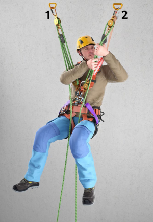
Abb. 11a SZP horizontale Hauptbewegungsrichtung von (1) nach (2)
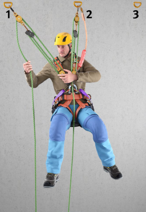
Abb. 11b Person positioniert sich mit zwei Tragsystemen (hier grün)
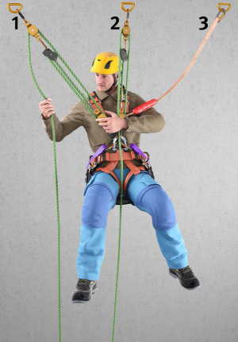
Abb. 11c Vor dem Lösen des Tragsystems (1) wird das Sicherungssystem (3) versetzt
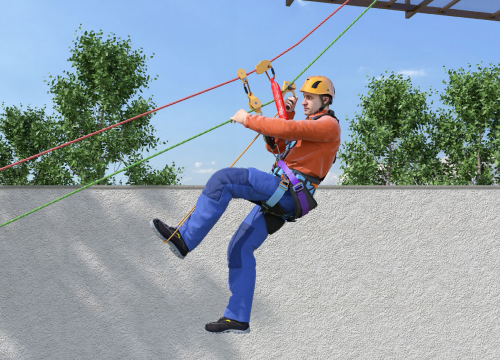
Abb. 12 SZP horizontale oder diagonale Hauptbewegungsrichtung
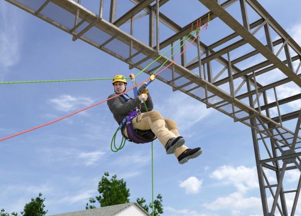
Abb. 13 SZP horizontale oder diagonale Hauptbewegungsrichtung
Der Zustieg/Zugang zu Arbeitsstellen und die Durchführung von Arbeiten können mit Gefährdungen durch Absturz verbunden sein. Der Unternehmer und die Unternehmerin haben im Rahmen ihrer baustellenspezifischen Gefährdungsbeurteilung die Maßnahmen zum Schutz gegen Absturz festzulegen.
Maßnahmen zum Schutz gegen Absturz beim Zustieg/Zugang können z. B. sein:
Zur Verwendung von PSAgA siehe auch DGUV Regel 112-198 "Benutzung von persönlichen Schutzausrüstungen gegen Absturz" und DGUV Information 203-047 "Schutz gegen Absturz beim Bau und Betrieb von Freileitungen".
Vor Beginn der Arbeiten ist immer ein schnelles, sicheres und schonendes Rettungsverfahren auszuwählen, insbesondere unter Berücksichtigung des medizinischen Aspekts (Verletzungen, Hängetrauma).
Individuelle Rettungsszenarien sind in der Einsatzplanung zu erfassen. Witterungsbedingungen, Lage des Arbeitsplatzes und Umgebungsbedingungen sind zu berücksichtigen.
Ist eine zusätzliche Rettungsausrüstung (Absturzschutzausrüstung zum Retten) erforderlich, ist diese
Es liegt in der Verantwortung des Unternehmers oder der Unternehmerin bzw. der vor Ort verantwortlichen Person in Abhängigkeit der örtlichen Gegebenheiten das Rettungskonzept so auszuarbeiten, dass die zu rettende Person gerettet und vom Rettungsdienst übernommen werden kann. Weitere Informationen bezüglich Rettungskonzepte sind z. B. der DGUV Regel 112-199 "Benutzung von persönlichen Absturzschutzausrüstungen zum Retten" und der DGUV Information 203-007 "Windenergieanlagen" zu entnehmen.